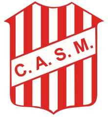

Los siguientes enlaces externos son Absolutos
Si Ud desea puede Ir a Google !!! haciendo clic
Si Ud desea puede Ir a Google !!! haciendo clic
Los siguientes enlaces internos son relativos
Haga clic Aquí para ver el escudo del Santo !!!
Haga clic en el escudo del santo para ir al sitio oficial !!
